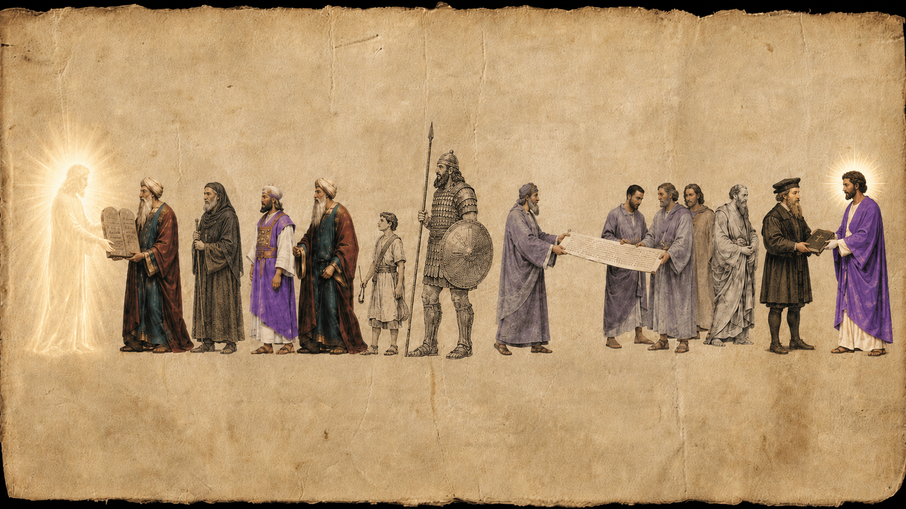
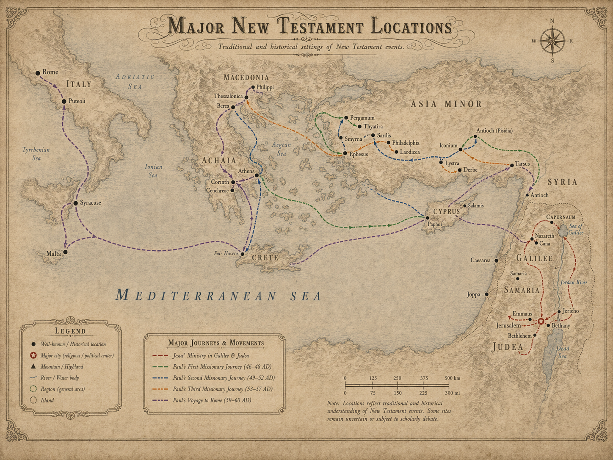
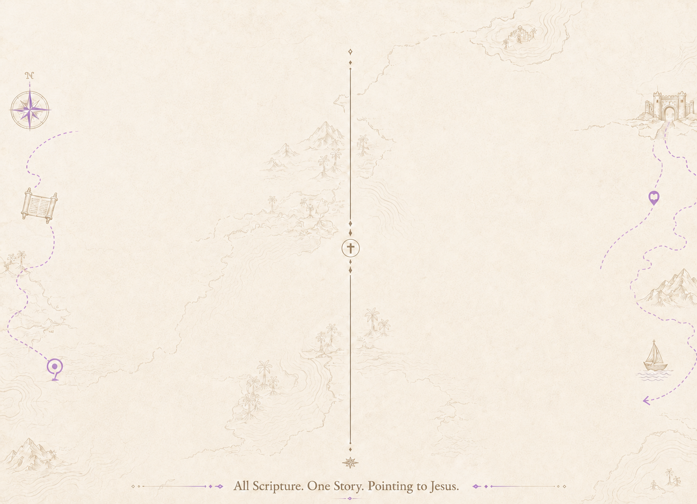
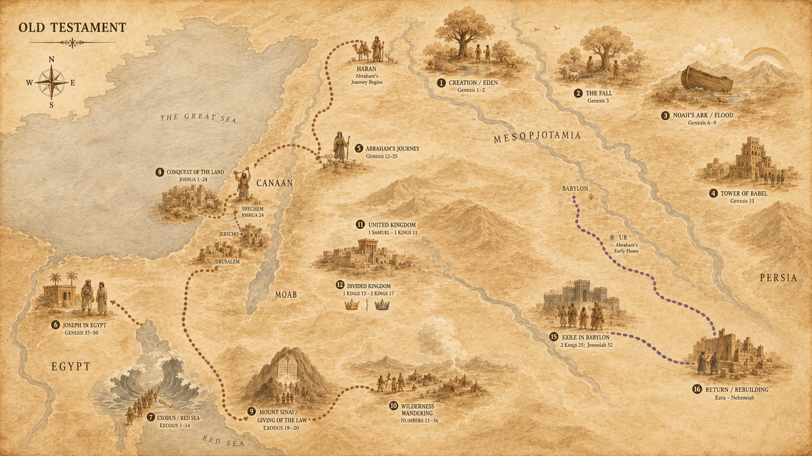

Where
Trace biblical events through real geography and place.
Follow Scripture through real places, real people, real timelines, and real meaning.
Start Here



Trace biblical events through real geography and place.
Meet the people, cultures, and empires behind the text.
Discover context, purpose, and the bigger biblical story.
See how Scripture connects to meaning, faith, and everyday life.
Start with curiosity
Start with a Bible question and see where Scripture, geography, history, and meaning connect.

Guided paths
Start with guided paths that explain what is happening, where it happened, who was involved, and why it matters.
Start HerePlaces
See how biblical events unfold across real locations, routes, kingdoms, and regions.
Explore Maps


People
Meet the people behind the story and see how their world helps the text come alive.
Learn Their StoryMAPS
See the major places, routes, kingdoms, and journeys that hold the biblical story together.
Watch
Strange facts. Big questions. Ancient context. Follow the trail.
Watch Videos